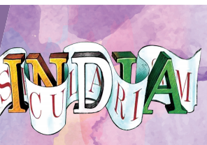
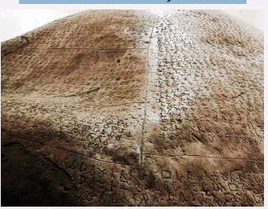
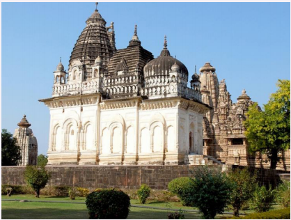
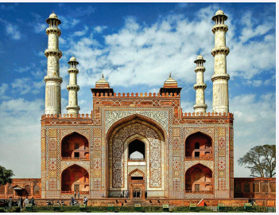

1. To understand the meaning of secularism
2. To know the importance of secularism
3. To develop the appreciation of the rights guaranteed in the Constitution
4. To analyse the importance of secular education
5. To discuss the constitutional provisions related to secularism
India will be a land of many faiths, equally honoured and respected, but of one national outlook. - Jawaharlal Nehru
India is a land of multi-religious faith and multi-cultural beliefs. It is the birth place of four major religions; Hinduism, Jainism, Buddhism and Sikhism. In our country people of diverse religions and beliefs have been living peacefully for a long time. Modern nationstates are multi-religious states, hence there is a need for tolerance of all religions. The concept of secularism is aimed at creating a society in which people of religious beliefs or people who do not belong to any religion can live together in harmony and peace.
Rajaram Mohan Roy, Sir Syed Ahmad Khan, Rabindranath Tagore, Mahatma Gandhi and B.R. Ambedkar were some of the noted individuals held high in public regards who contributed towards the spread of secularism in the various spheres of Indian society. Secularism is invaluable for a society like India which is characterised by religious diversity.
Do you know?
The term secularism is derived from the Latin word 'saeculum' meaning ‘an age’ or ‘the spirit of an age’. George Jacob Holyoake a British newspaper editor coined the term secularism.
Secularism means an attitude of tolerance towards other religions and peaceful co-existence of citizens belonging to different faiths. It is a policy of neutrality and equality by the states towards all religious communities.
Secularism is the principle of separation of state and religion or more broadly no interference of the state in the matters of religion and vice-versa. This means that every citizen is free to propagate, practice, and profess their faith, change it or not have one, according to their conscience.
Box item
Atheism - is a lack of belief in god and gods.
Secularism - is non – interference of the state in religious affairs and vice-versa.
1. One religious group does not dominate another.
2. Some members don’t dominate other members of the same religious community.
3. The state does not enforce any specific religion nor take away the religious freedom of individuals.
A simple statement by poet Iqbal illustrates the secular view “Religion does not teach us animosity; We are Indians and India is our home!”
Emperor Ashoka was the first great emperor to announce as early as 3rd century BC (BCE) that the state would not prosecute any religious sect. In his 12th Rock Edict, Ashoka made an appeal not only for the tolerance of all religious sects but also to develop a spirit of great respect towards them.

Principle of Liberty – the state permits the practice of any religion. Principle of Equality – the state does not give preference to any religion over another.
Principle of Neutrality – the state remains neutral in religious matter.
A secular state is the one in which the state does not officially promote any one religion as the country’s official religion and every religion is treated equally. It gives to every citizen not only the equal right to freedom of conscience but also the right to profess, practice and propagate any faith of their own choice. The state observes an attitude of neutrally and impartiality towards all religions. In a secular state no one is given preferential treatment and the State does not discriminate any person on the basis of their religious practices and beliefs. All citizens are eligible to enter government service irrespective of their faith. There should be absolutely no religious instructions in educational institutions and no taxes to support any particular religion.
The concept of secularism evolved in India as equal treatment of all religions. We need secular state to maintain peace and harmony between people of various religious ideologies. It is a part of democracy, which grants equal rights.
Box item
The Mughal emperor Akbar followed the policy of religious toleration. His propagation of Din-i-Illahi (Divine Faith) and Sulh-e-Kul (Peace and harmony among religions) were advocated for religious toleration.
Secularism is the part of Indian Constitution. The makers of the Indian Constitution were aware that a strong and united nation could be built only when all sections of people had the freedom to practice their religion. So secularism was accepted as one of the fundamental tenets for the development of democracy in India.
The word secularism was not mentioned in our Constitution when it was adopted in 1950. Later on in 1976, the word secular was incorporated in the Preamble through the 42nd Amendment of the Indian Constitution. (India is a Sovereign, Socialist, Secular, Democratic, Republic) The basic aim of our Constitution is to promote unity and integrity of the nation along with individual dignity.
There is no state religion in India. The state will neither establish a religion of its own nor confer any special patronage upon any particular religion. The freedom of religion guaranteed under the Indian Constitution is not confined to its citizen alone but extends to aliens also. This was pointed out by the Hon’ble Supreme Court in the case Ratilal Panchand V State of Bombay in 1954.
A 19th century Hindu temple in Khajuraho, India incorporates a Hindu spire, a Jain cupola, a Buddhist stupa and Muslim style dome in place of usual shikara.

a. The state will not identify itself with or be controlled by any religion b. The state guarantees to everyone the right to profess any religion of their own.
c. Th e state will not accord any preferential treatment any of them.
d. No discrimination will be shown by the state against any person on account of his religious faith.
e. I t creates fraternity of the Indian people and gives assurance the dignity of the individual and the unity of the nation.
Box item
The secular Indian state declares public holidays to mark the festivals of all religions.
Article 15 prohibition of discrimination on grounds of religion, caste, sex or place of birth etc.,
Article 16 equality of opportunity in public employment.
Article 25(1) guarantees the freedom of conscience and the right to profess, practice and propagate religion individually.
Article 26 Freedom to manage religious affairs
Article 27 The state shall not compel any citizen to pay any taxes for the promotion of any particular religion.
Article 28 on religious instruction or religious worship in certain educational institution.
Article 29(2) A ban on discrimination in state-aided educational institution
Secularism in education means making public education free from any religious dominance. Children as future citizens must get education which should aim at their development of character and moral behavior irrespective of religious affiliation.
1. to remove narrow mindedness and makes dynamic and enlightened view;
2. to develop moral and humanistic outlook
3. to train the youth to be good citizen;
4. to strengthen democratic values like liberty, equality, and fraternity and co-operative living;
5. to give wider vision towards life;
6. to develop an attitude of appreciation and understanding of others point of view;
7. to develop the spirit of love, tolerance, co-operation, equality and sympathy;
8. to synthesis materialism and spiritualism.
The Indian State is secular and works in various ways to prevent religious domination. Secularism undoubtedly helps and aspires to enable every citizen to enjoy fully blessings of life, liberty and happiness. Th e Indian Constitution guarantees fundamental rights that are based on secular principles. It is one of the glowing achievement on Indian democracy. Secularism allows us to live in civility. It compels people to respect other religion. It grants equal rights to the people in respect of their religious faith. It is desirable for a country like India.
Akbar’s instruction for his mausoleum was that it would incorporate elements from diff erent religions including Islam and Hinduism

1. India is the land of multi – religious country. Hence there is a need for tolerance of all religions.
2. Secularism is the belief that no one should be discriminated on the basis of religion.
3. Secularism is very essential for the smooth functioning of a democratic country.
4. A secular state is one in which the state does not officially promote any one religion as state religion.
5. The Indian Constitution allows individuals the freedom to live by their religious beliefs and practices.
6. The Indian state works in various ways to prevent religious domination.
diversity |
the state of being diverse |
பன்முகத்தன்மை |
propagate |
spread and promote widely |
பரவச்செய் |
liberty |
freedom |
சுதந்திரம் |
equality |
fairness |
சமத்துவம் |
neutrality |
impartially |
நடுநிலைமை |
ideology |
doctrine |
சித்தாந்தம் |
|
|
|
1. Secularism means
a) State is against to all religions
b) State accepts only one religion
c) An attitude of tolerance and peaceful co-existence on the part of citizen belonging any religion
d) None of these
2. India is a land of dash
a) multi - religious faith
b) multi - cultural beliefs
c) Both (1) and (2)
d) None of these
3. The Preamble of the Constitution was amended in dash.
a) 1951
b) 1976
c) 1974
d) 1967
4. Which one of the following describes India as a secular state?
a) Fundamental Rights
b) Fundamental Duty
c) Directive Principles of State Policy
d) Preamble of the Constitution
5. Right to freedom of religion is related to
a) Judiciary
b) Parliament
c) Directive principles of State Policy
d) Fundamental rights
6. According to Article 28, which type of education is restricted in state aided educational institutions?
a) Religious instruction
b) Moral education
c) Physical education
d) None above these
7. The country will be considered as a secular country, if it dash
a) gives importance to a particular religion
b) bans religious instructions in the state – aided educational institutions.
c) does not give importance to a particular religion
d) bans the propagation of any religious belief.
1. Religion does not teach us dash.
2. Secularism is a part of democracy which grants dash.
3. dash is a lack of belief in god and gods.
4. The basic aim of our constitution is to promote dash and dash.
5. Article 15 prohibits dash on the grounds of religion, caste, sex or place of birth.
1. Atheism - coined the word secularism
2. Children - social reformer
3. Din-i-Illahi - l ack of belief in god
4. Constitution - future citizen
5. Holyoake - Divine faith
6. Rajaram Mohan Roy – 1950
1. There is state religion in India
2. The term secularism has been derived from the Greek word.
3. The Mughal emperor Akbar followed the policy of religious toleration.
4. Jainism originated in China.
5. Government of India declares holidays for all religious festivals.
1.Secularism is invaluable for a society like India which is characterized by religious diversity.
2) The word secularism was not mentioned in the Constitution when it was adopted in 1950.
3) Article 26 deals with payment of taxes for the promotion of any particular religion.
4) Akbar’s tomb situated at Sikandara near Agra.
a) 1, 2 only
b) 2, 3 only
c) 4 only
d) 1, 2 and 4 only
2. Assertion (A): A foreigner can practice his own religious faith in India.
Reason (R): The freedom of religion is guaranteed by the constitution not only for Indians but also for the aliens also.
a) A is true but R is false.
b) Both A and R are true and R is the correct explanation of A.
c) A is false but R is true.
d) Both A and R are true. R is not the correct explanation of A.
3. Assertion (A): Secularism is invaluable in India.
Reason (R): India is a multi- religious and multi- cultural country.
a) A is correct and R is the correct explanation of A.
b) A is correct and R is not the correct explanation of A.
c) A is wrong and R is correct.
d) Both are wrong.
4. Find out the wrong pair.
a) Din-i-Illahi - A book
b) Khajuraho - Hindu temple
c) Ashoka - Rock Edict
d) Iqbal - Poet
1. Name some of the Indians who contributed to spread of secularism.
2. What does secularism mean?
3. State the objectives of secularism.
4. Why is it important to separate religion from the state?
5. What are the characteristic features of a secular state?
6. Mention any three Constitutional provisions related to secularism.
1. Why we need secular education?
2. Secularism is necessary for a country like India. Justify.
1. Will the Government intervene if some religious group says that their religion allows them to practice human sacrifice?
1. Look at the holidays of your school calendar. How many of them pertain to different religions? List them based on religions. What does it indicate?
2. How can you develop religious tolerance?
At home |
At school |
In your locality |
At national level |
1. The Consitution of India, Government of India, Ministry of Law and Justice, New Delhi.
2. Sekhar Bandyopadhyay., and Aloka Parasher Sen., Religion and Modernity in India, Oxford Publication, 2017
http:// legislative.gov.in constitution-of-india
http://legislative.gov.in/ sites/ default/files/ part1.pdf